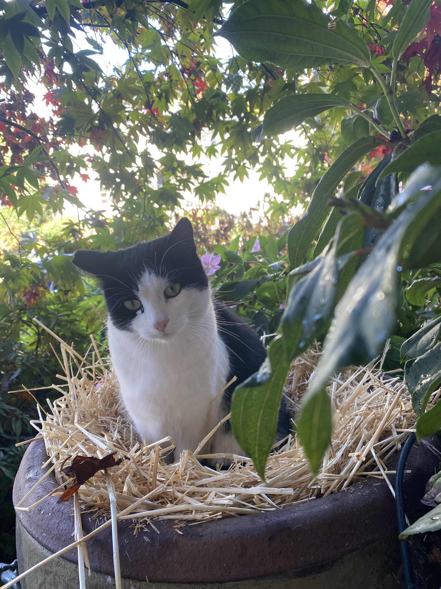

This summer, I went on tour with Circus Smirkus. The time was a meaningful experience because it took me to new places and allowed me to perform more. I learned how to live away from home in less-than-ideal conditions and work with people from all over the country.
I volunteer with the non-profit organization, Feral Change, to help trap, neuter, and release stray cats in the area. TNR is important to me because it betters the lives of cats that would not have gotten help otherwise. I learned just how badly many of these cats need our help.